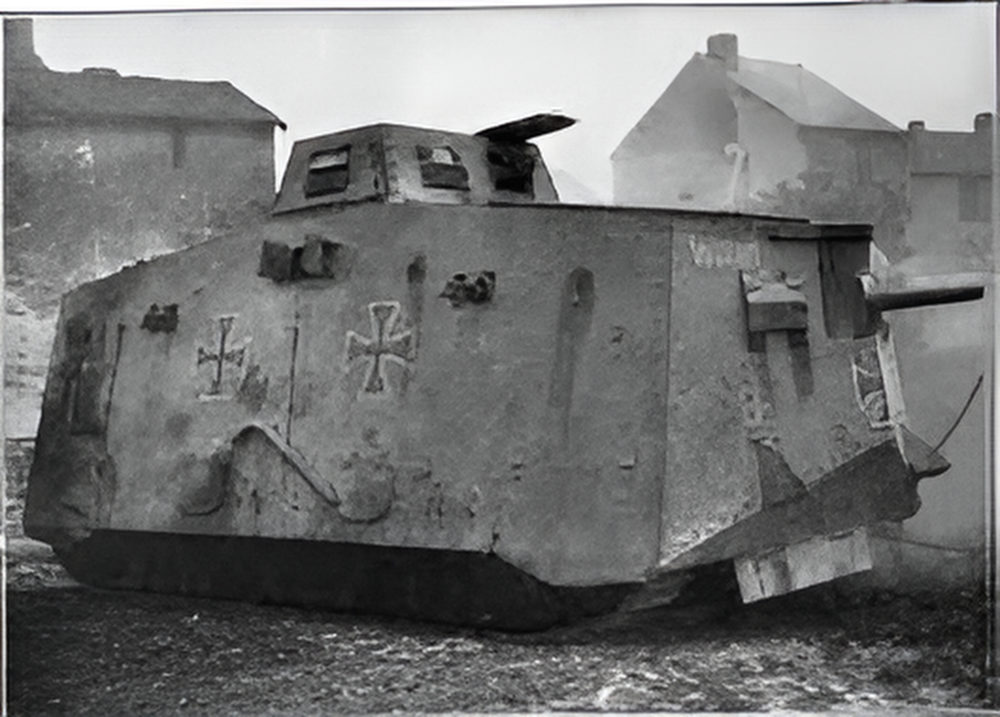

The A7V, officially known as the Sturmpanzerwagen A7V, was Germany’s first operational tank, entering service in 1918 as a direct response to the British use of armored vehicles on the Western Front. Only 20 combat-ready tanks were built, making it one of the rarest tanks of World War I. Powered by two Daimler engines producing 200 horsepower, the A7V could reach speeds of up to 15 km/h on roads but was slow off-road and struggled with trench-crossing due to its short tracks. It first saw action in March 1918 and participated in the Battle of Villers-Bretonneux in April, the world’s first tank-versus-tank battle against British Mark IVs. Mechanically unreliable and produced in very small numbers, the A7V had little overall impact. Today, only one example, nicknamed “Mephisto,” survives in Australia.

- Characteristics:
- Type: Heavy tank
- Weight: 33 tons
- Crew: 18
- Armament: 57 mm Maxim-Nordenfelt cannon; 6 x 7.92mm MG08 machine guns
- Speed: 15 km/h